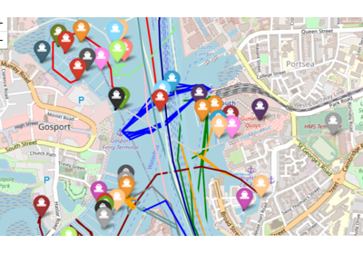
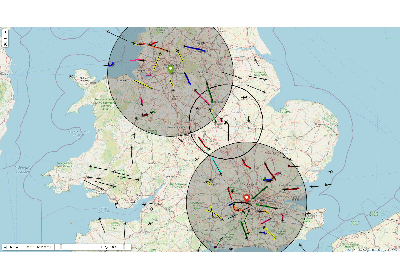
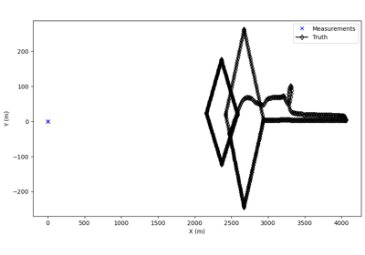
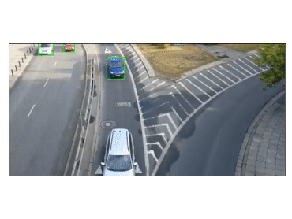

Demonstrations
Here are a selection of demonstrations of SMART FUSION against real data sets.

Tracking AIS Reports Using SMART FUSION
Tracking AIS Reports Using SMART FUSION

Tracking Groundtruth ADS-B Data by Simulating Radar Detections
Tracking Groundtruth ADS-B Data by Simulating Radar Detections

UAV Tracking Demonstration

Video processing, Object detection & Tracking
Video processing, Object detection & Tracking